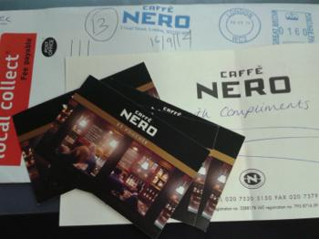

7월 / 8월에는 나에게왜이래~~ 싶을정도로 은행/금전관련 사건이 많았다;;
것도 동시다발적으로;;;
1.보다폰
7월중순 7개월정도 contract 남은;; 전화기 잃어버려서
그돈 몽땅 물어주는 과정이 8월말까지 계속되고
잃어버린 당일 새로 전화기 만들면서 직원이
188파운드 정도 7월말에 빠져나갈거다 - 라고 말해줌
↓
7월말 내 원래 monthly 금액인 33파운드 정도만 나감
↓
보다폰 매장방문
↓
우린모른다 서비스센터 전화해봐라 - 라면서 전화번호 줌
(이나라는 이게 겁나 짜증나는데 ㅡㅡ;;;
한국은 매장방문해서 문의하면 엔간하면
날 처음 응대한 직원 / 혹은 그 직원이 다른 직원을 연결시켜주고
엔간해서는 그자리에서 해결이 나지만
이나라는 무조건!! 무조건 서비스센터 전화번호를 준다
근데 이 전화가
응대하는사람이 대부분 억양 겁나센 인도쪽 사람들이고 ㅜㅜ
"아임또낑뚜유" (i am talking to you) 라고 말하는 애들 ㅜㅜ
알아듣기 너무너무 힘들어 ㅜㅜ 그리고 이건 로칼애들도 그렇다더라 ㅋㅋㅋㅋ
그리고 이전화는 무료가 아냐 ㅜㅜ
먼쓸리 600분 / 300분 무료통화 뭐 이런요금제에 포함이 안되
10분 / 20분정도 통화해도 10-20파운드는 우습게 가져감 ㅜㅜ
이게 최고 치사한 부분이라고 생각하는게
계약 캔슬 / 문의 이런걸 내가 선택할 옵션이 전혀없이
무조건 전화를 걸어야하는데 전화를 하면 거기에따른 엑스트라 차지가 있어
이런게 어딨어 ㅜ ㅜ 독한넘들;;; )
↓
수많은 질문과 난관을 헤치고 전화로 직원연결
상황설명하고 왜 188파운드가 아니라 33파운드 정도만 나갔냐고
물어보니 8월29일날 222파운드가 나가고 계약종료 될거다 라고 대답해줌
↓
읭? 왜 금액이 늘었냐? 라고 물어보니까
계약취소 비용이 붙어서 그렇단다 ㅡㅡ;;;;
↓
그래서 오케 그럼 그건 알았고;;
8월29일날 222파운드 내면
정말정말 끝인거지!! 계약종료!! 더이상 암것도 없는거지
를 수차례 되묻고 전화종료
(이나라가 날 일케 불신으로 몰아넣었쒀 ㅜㅜ
이제 매장 담당자랑 이야길해도 쉽게 못믿는다 ㅋㅋㅋ)
↓
그리고 8월25일날 약 158파운드정도만 빠져나감 ㅡㅡ;;
계약종료 메세지와 함께;;;;
우째 똑같이 보다폰에서 일하는애들이
한명도 같은 소리를 하는게 없어;;;;
이렇게 일부로 어긋나기도 힘들거 같은데;;;;;
2. Alt Fest
그리고 두번째는 락페 ㅡㅡ;;;
대충 상황보니 이번이 첫행사에 처음 시작하는 회사같았는데
펀딩에 문제생겨서 캔슬
↓
각자 티켓구입한 웹사이트가서 환불받으라고 공지뜸
↓
내가구입한 클럽티켓이라는 웹사이트 들어감
↓
웹사이트 닫혀있고 메일을 보내건 전화를 하건 대답없음
↓
구입한사람들 / 락페 주최측도 당황 / 해당 페이스북 난리났음 ㅋㅋㅋ
↓
주최측도 우리도 지금 열흘넘게 클럽티켓이랑 연락하려 시도하고있지만
전혀 연락이 되지않는다, 영문을 모르겠다
식의 공지글을 올림
↓
사람들 욕 바가지로 하면서 난리남 ㅋㅋㅋㅋㅋ
↓
그와중에 직접 은행가서 담판짓고 리펀받은 사람이 후기를 남김
↓
나도 은행과 통화시도
↓
전화통화할때 이미 나말고도 이런전화 많이받은듯
내 사진이 들어간 신분증명아이디 / 락페 캔슬과 티켓결제 증명할 이메일이나영수증 들고
집근처 아무 브랜치나 예약없이 방문해서 환불 받으라는 안내를 받음
↓
만발의 준비를 갖추고 은행방문
↓
은행직원이 그건 전화로 문의하라함 ㅡㅡ;;;
↓
아니시바!! 내가 전화통화해서
그전화통화한 사람이 매장방문하라고 해서 오늘 온거라니까!!!!!
↓
직원 당황하면서 고객상담하는 개인룸으로 날 부르더니
전화번호를 하나 남겨주고
이 전화걸어서 시도해보라면서 사라짐
↓
전화시도
↓
여권필요없음 / 캔슬이메일 필요없음 ㅡㅡ;;;
본인확인만 마치고 (10-14 working days 걸린다고하면서) 리펀종료;;;;;;
3. 카페네로
암생각없이 은행구좌 체크중
최근 적어도 2달 이상 카페네로를 방문한 적이없는데
8월11일날 내가 카페네로서 9파운드정도를 썼다고 나옴
↓
카페네로를 간적도 없을뿐더러
가도 엔간해서는 6-7파운드를 넘긴적이 없길래
은행에 전화
↓
그건 직접 retailer에게 문의하라고 함
카페네로처럼 크고 체인많은 회사가 그럴리 없다
니가 착각한거겠지 식의 멘트와 함께 --++
↓
카페네로 - 이메일로 문의
(난 최근 방문한 기억이 없는데 내가 언제 어디 매장에서
내 카드를 사용했는지 알려달라고 했음)
↓
상대방이 너 확실히 8월11일 맞냐?
7월11일 8월11일 전부 훑었지만 없다
이래서 내 bank statement 스샷 보내고
어쩌구 하느라 일주일 허비
↓
그다음 주에도 영 소식이 없길래
언제쯤 알수있냐니까
자기 지금 휴가라고 다음주에 알려주겠다고 함;;
↓
돌아온 답변은
자기들이 3개월치만 보관하는데
그 이전건 자기들도 자료가 이미 없어져서 모르겠고
여튼 니 기록은 찾을수없다
굉장히 드문 케이스이긴 한데
결제시 카드머신 오류(?)로 결제가 delay되었거나
기록전송도중 오프라인이 되었거나 뭐 그랬지 않았을까?
하지만 확실히는 우리도 이제 알길이 없어~ 라는식으로
그리고 사과의 의미로 20파운드 바우쳐 보내주겠다고 주소 알려달라했는데
이놈의 바우쳐도 ㅜㅜ
이걸 signed for 로 보내서 ㅜㅜ
우체국 콜렉트하는곳 버스타고 20-30분 걸리는 거리를 두번이나 찾아갔는데
배달원의 실수로 두번다 콜렉트 매장에 내 우편물이 없어서
결국 75p 엑스트라로 페이하고 동네우체국에서 콜렉트했다는 사실......OTL
위 모든일이 전부 7/8월에 일어나고
종료된게 이번주 수요일.........OTL

굉장히 힘들게(?) 손에 들어온 바우쳐
케키를 마구마구 먹어줄테다 ㅜㅜ
헉헉 힘들었어 ㅜㅜ
차카게 살게요ㅜㅜ 당분간은 평화롭게 살고싶다 ㅜㅜ
이럴때마다 아 시바 영쿡 이란 소리가 절로나온다 ㅋㅋㅋ
한국 좋은나라에요 ㅜㅜ ㅜㅜ ㅜㅜ